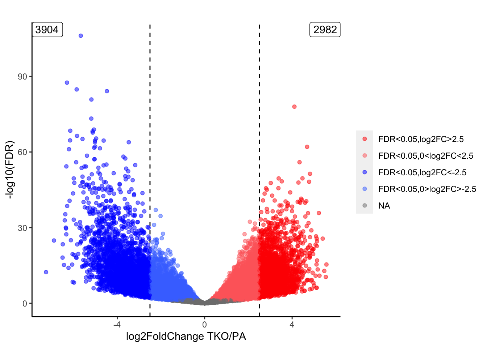
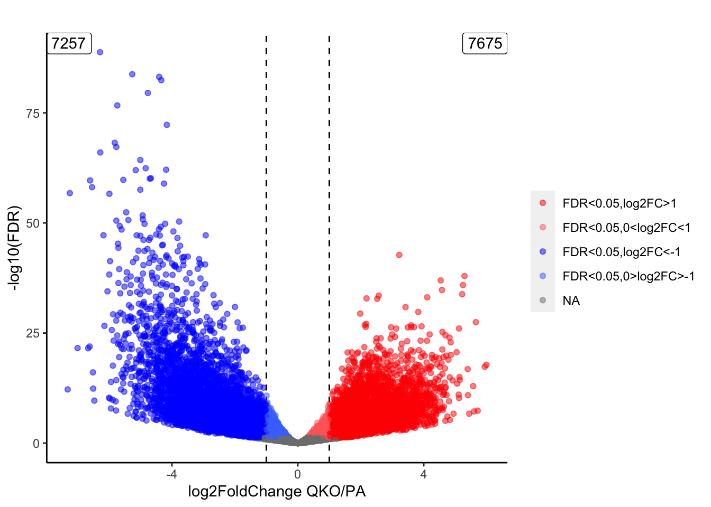
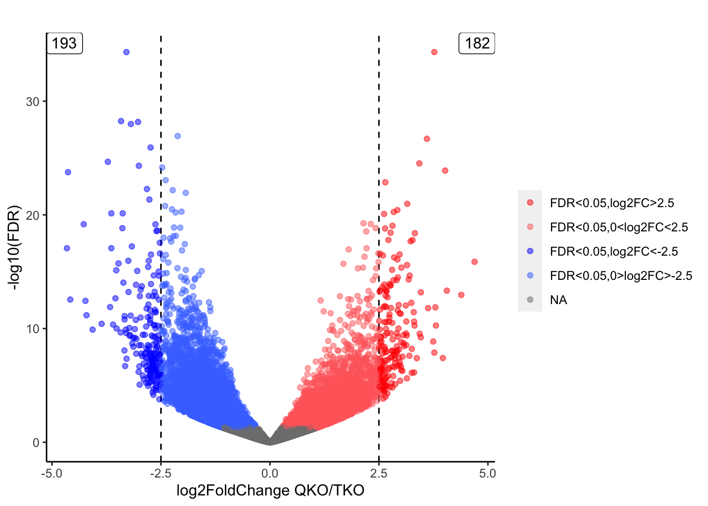
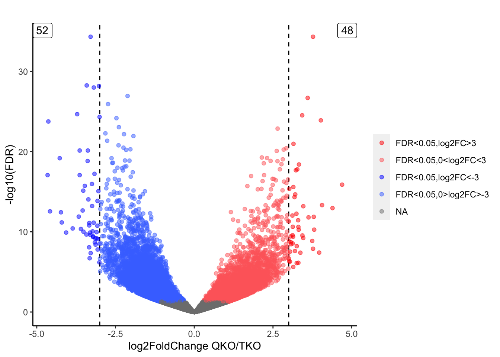
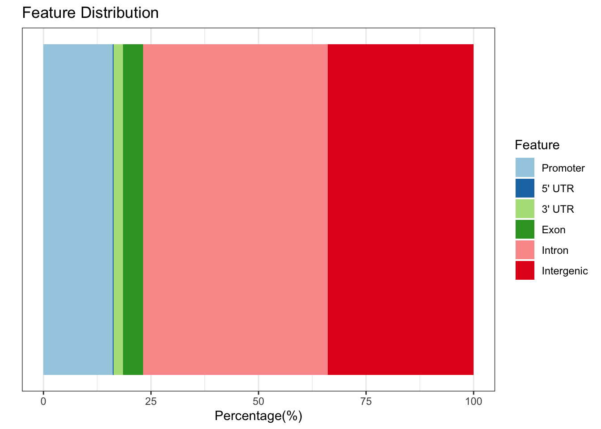

Number of peaks per sample (IDR-pooled)
Aggregate and heatmap plots
ATAC-seq signal was centered on ATAC-seq peaks.
Merged reps

Individual reps

Distribution of ATAC-seq peaks
PCA
Volcano plots
These logfold changes were shrunken prior to plotting.
TKO v PA
|log2FC| > 1

|log2FC| > 2
|log2FC| > 2.5

|log2FC| > 3
|log2FC| > 4
QKO v PA
|log2FC| > 1

|log2FC| > 2
|log2FC| > 2.5
|log2FC| > 3
|log2FC| > 4
QKO v TKO
|log2FC| > 1
|log2FC| > 2
|log2FC| > 2.5

|log2FC| > 3

|log2FC| > 4

MA plots
Points will be colored blue if the adjusted p value is less than 0.05. Points which fall out of the window are plotted as open triangles pointing either up or down.
TKO v PA
QKO v PA
QKO v TKO
Feature distribution
For all differential peaks, padj < 0.05 was used with different log2FC as indicates below.
TKO v PA
Cutoff=1
log2FC > 1
## >> preparing features information... 2022-11-29 14:02:23
## >> identifying nearest features... 2022-11-29 14:02:24
## >> calculating distance from peak to TSS... 2022-11-29 14:02:24
## >> assigning genomic annotation... 2022-11-29 14:02:24
## >> assigning chromosome lengths 2022-11-29 14:02:44
## >> done... 2022-11-29 14:02:44log2FC < -1
## >> preparing features information... 2022-11-29 14:02:45
## >> identifying nearest features... 2022-11-29 14:02:45
## >> calculating distance from peak to TSS... 2022-11-29 14:02:45
## >> assigning genomic annotation... 2022-11-29 14:02:45
## >> assigning chromosome lengths 2022-11-29 14:02:47
## >> done... 2022-11-29 14:02:47Cutoff=2
log2FC > 2
## >> preparing features information... 2022-11-29 14:02:49
## >> identifying nearest features... 2022-11-29 14:02:49
## >> calculating distance from peak to TSS... 2022-11-29 14:02:49
## >> assigning genomic annotation... 2022-11-29 14:02:49
## >> assigning chromosome lengths 2022-11-29 14:02:51
## >> done... 2022-11-29 14:02:51log2FC < -2
## >> preparing features information... 2022-11-29 14:02:52
## >> identifying nearest features... 2022-11-29 14:02:52
## >> calculating distance from peak to TSS... 2022-11-29 14:02:52
## >> assigning genomic annotation... 2022-11-29 14:02:52
## >> assigning chromosome lengths 2022-11-29 14:02:55
## >> done... 2022-11-29 14:02:55Cutoff=3
log2FC > 3
## >> preparing features information... 2022-11-29 14:02:55
## >> identifying nearest features... 2022-11-29 14:02:55
## >> calculating distance from peak to TSS... 2022-11-29 14:02:56
## >> assigning genomic annotation... 2022-11-29 14:02:56
## >> assigning chromosome lengths 2022-11-29 14:02:58
## >> done... 2022-11-29 14:02:58log2FC < -3
## >> preparing features information... 2022-11-29 14:02:59
## >> identifying nearest features... 2022-11-29 14:02:59
## >> calculating distance from peak to TSS... 2022-11-29 14:02:59
## >> assigning genomic annotation... 2022-11-29 14:02:59
## >> assigning chromosome lengths 2022-11-29 14:03:01
## >> done... 2022-11-29 14:03:01Cutoff=4
log2FC > 4
## >> preparing features information... 2022-11-29 14:03:02
## >> identifying nearest features... 2022-11-29 14:03:02
## >> calculating distance from peak to TSS... 2022-11-29 14:03:02
## >> assigning genomic annotation... 2022-11-29 14:03:02
## >> assigning chromosome lengths 2022-11-29 14:03:04
## >> done... 2022-11-29 14:03:04log2FC < -4
## >> preparing features information... 2022-11-29 14:03:05
## >> identifying nearest features... 2022-11-29 14:03:05
## >> calculating distance from peak to TSS... 2022-11-29 14:03:06
## >> assigning genomic annotation... 2022-11-29 14:03:06
## >> assigning chromosome lengths 2022-11-29 14:03:08
## >> done... 2022-11-29 14:03:08QKO v PA
Cutoff=1
log2FC > 1
## >> preparing features information... 2022-11-29 14:03:09
## >> identifying nearest features... 2022-11-29 14:03:09
## >> calculating distance from peak to TSS... 2022-11-29 14:03:09
## >> assigning genomic annotation... 2022-11-29 14:03:09
## >> assigning chromosome lengths 2022-11-29 14:03:11
## >> done... 2022-11-29 14:03:11log2FC < -1
## >> preparing features information... 2022-11-29 14:03:13
## >> identifying nearest features... 2022-11-29 14:03:13
## >> calculating distance from peak to TSS... 2022-11-29 14:03:13
## >> assigning genomic annotation... 2022-11-29 14:03:13
## >> assigning chromosome lengths 2022-11-29 14:03:15
## >> done... 2022-11-29 14:03:15
Cutoff=2
log2FC > 2
## >> preparing features information... 2022-11-29 14:03:16
## >> identifying nearest features... 2022-11-29 14:03:16
## >> calculating distance from peak to TSS... 2022-11-29 14:03:16
## >> assigning genomic annotation... 2022-11-29 14:03:16
## >> assigning chromosome lengths 2022-11-29 14:03:18
## >> done... 2022-11-29 14:03:18log2FC < -2
## >> preparing features information... 2022-11-29 14:03:19
## >> identifying nearest features... 2022-11-29 14:03:19
## >> calculating distance from peak to TSS... 2022-11-29 14:03:19
## >> assigning genomic annotation... 2022-11-29 14:03:19
## >> assigning chromosome lengths 2022-11-29 14:03:21
## >> done... 2022-11-29 14:03:21
Cutoff=3
log2FC > 3
## >> preparing features information... 2022-11-29 14:03:22
## >> identifying nearest features... 2022-11-29 14:03:22
## >> calculating distance from peak to TSS... 2022-11-29 14:03:23
## >> assigning genomic annotation... 2022-11-29 14:03:23
## >> assigning chromosome lengths 2022-11-29 14:03:25
## >> done... 2022-11-29 14:03:25log2FC < -3
## >> preparing features information... 2022-11-29 14:03:26
## >> identifying nearest features... 2022-11-29 14:03:26
## >> calculating distance from peak to TSS... 2022-11-29 14:03:26
## >> assigning genomic annotation... 2022-11-29 14:03:26
## >> assigning chromosome lengths 2022-11-29 14:03:28
## >> done... 2022-11-29 14:03:28Cutoff=4
log2FC > 4
## >> preparing features information... 2022-11-29 14:03:29
## >> identifying nearest features... 2022-11-29 14:03:29
## >> calculating distance from peak to TSS... 2022-11-29 14:03:30
## >> assigning genomic annotation... 2022-11-29 14:03:30
## >> assigning chromosome lengths 2022-11-29 14:03:32
## >> done... 2022-11-29 14:03:32log2FC < -4
## >> preparing features information... 2022-11-29 14:03:32
## >> identifying nearest features... 2022-11-29 14:03:32
## >> calculating distance from peak to TSS... 2022-11-29 14:03:33
## >> assigning genomic annotation... 2022-11-29 14:03:33
## >> assigning chromosome lengths 2022-11-29 14:03:35
## >> done... 2022-11-29 14:03:35QKO v TKO
Cutoff=1
log2FC > 1
## >> preparing features information... 2022-11-29 14:03:36
## >> identifying nearest features... 2022-11-29 14:03:36
## >> calculating distance from peak to TSS... 2022-11-29 14:03:36
## >> assigning genomic annotation... 2022-11-29 14:03:36
## >> assigning chromosome lengths 2022-11-29 14:03:38
## >> done... 2022-11-29 14:03:38log2FC < -1
## >> preparing features information... 2022-11-29 14:03:40
## >> identifying nearest features... 2022-11-29 14:03:40
## >> calculating distance from peak to TSS... 2022-11-29 14:03:40
## >> assigning genomic annotation... 2022-11-29 14:03:40
## >> assigning chromosome lengths 2022-11-29 14:03:42
## >> done... 2022-11-29 14:03:42Cutoff=2
log2FC > 2
## >> preparing features information... 2022-11-29 14:03:44
## >> identifying nearest features... 2022-11-29 14:03:44
## >> calculating distance from peak to TSS... 2022-11-29 14:03:44
## >> assigning genomic annotation... 2022-11-29 14:03:44
## >> assigning chromosome lengths 2022-11-29 14:03:46
## >> done... 2022-11-29 14:03:46log2FC < -2
## >> preparing features information... 2022-11-29 14:03:47
## >> identifying nearest features... 2022-11-29 14:03:47
## >> calculating distance from peak to TSS... 2022-11-29 14:03:47
## >> assigning genomic annotation... 2022-11-29 14:03:47
## >> assigning chromosome lengths 2022-11-29 14:03:50
## >> done... 2022-11-29 14:03:50Cutoff=3
log2FC > 3
## >> preparing features information... 2022-11-29 14:03:51
## >> identifying nearest features... 2022-11-29 14:03:51
## >> calculating distance from peak to TSS... 2022-11-29 14:03:51
## >> assigning genomic annotation... 2022-11-29 14:03:51
## >> assigning chromosome lengths 2022-11-29 14:03:53
## >> done... 2022-11-29 14:03:53log2FC < -3
## >> preparing features information... 2022-11-29 14:03:55
## >> identifying nearest features... 2022-11-29 14:03:55
## >> calculating distance from peak to TSS... 2022-11-29 14:03:55
## >> assigning genomic annotation... 2022-11-29 14:03:55
## >> assigning chromosome lengths 2022-11-29 14:03:57
## >> done... 2022-11-29 14:03:57Cutoff=4
log2FC > 4
## >> preparing features information... 2022-11-29 14:03:58
## >> identifying nearest features... 2022-11-29 14:03:58
## >> calculating distance from peak to TSS... 2022-11-29 14:03:59
## >> assigning genomic annotation... 2022-11-29 14:03:59
## >> assigning chromosome lengths 2022-11-29 14:04:01
## >> done... 2022-11-29 14:04:01log2FC < -4
## >> preparing features information... 2022-11-29 14:04:02
## >> identifying nearest features... 2022-11-29 14:04:02
## >> calculating distance from peak to TSS... 2022-11-29 14:04:02
## >> assigning genomic annotation... 2022-11-29 14:04:02
## >> assigning chromosome lengths 2022-11-29 14:04:05
## >> done... 2022-11-29 14:04:05Number of ATACseq peaks in K36me2 regions
Taking the union of ATACseq, how many ATACseq peaks are found in each sample’s K36me2 regions.